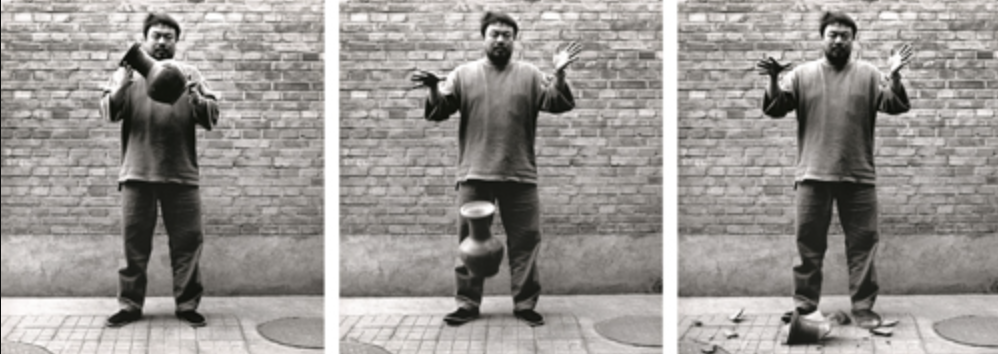

Ai Weiwei is one of the most prominent figures within contemporary art, as well as social and political discourse regarding China, his home country. His works often critique these systems, drawing from both Chinese culture and broader global trends. Ai has often played with the idea of destruction of art, which raises the question: does this act of vandalism unintentionally align with or subvert his previously established artistic motivations?
The intentional destruction of this major artwork provokes a similar debate over the boundaries of artistic expression and vandalism as Weiwei’s piece “Dropping a Han Dynasty Urn” did in the past.
This piece, created by Weiwei in 1995, consists of three consecutive black and white photographs depicting the artist dropping and shattering a 2000-year-old urn from the Han dynasty in China. One of the main themes within this piece is the idea of using destruction as a force of creation. By destroying this important piece of Chinese art, he challenges the sacred nature of tradition. Ai forces viewers to confront their emotional response to the destruction of cultural objects and invites us to reevaluate how we assign value to material objects within our modern culture. Guggenheim Bilbao.
A reception for a new exhibition by the Chinese artist Ai Weiwei in Bologna, Italy, was disrupted on Friday when a man walked in and smashed a large, porcelain sculpture, leaving museum guests and the artist stunned.
The incident, which occurred during a reception for “Ai Weiwei. Who Am I?,” the artist’s first solo exhibition in the city, sent guests at the Palazzo Fava scattering and left the sculpture shattered on the floor.
The destruction of this art piece during Weiwei’s first solo exhibition can be seen in a global context as a comment on China’s use of cultural heritage as a form of soft power. This power refers to a nation’s ability to shape perspective and increase its influence through cultural, artistic, and ideological means rather than through military or economic forces. Weiwei’s work itself embodies this paradox - he challenges Chinese authoritarianism while intentionally using materials and techniques that have historically contributed to the cultural narrative the country wishes to protect. JSTOR
Footage of the incident captured by security cameras and later shared on Mr. Ai’s Instagram account shows the man forcefully pushing over the sculpture and then raising its broken pieces above his head before being tackled by museum guards.
It is interesting to think about why Weiwei decided to share this incident on his Instagram account. Sharing this information parallels Weiwei’s negative views on censorship, seen in his long-standing critiques of the Chinese regime and state censorship. By posting these videos, he allows us as viewers to see the full life of the piece and makes a conscious effort to avoid exerting control over the narrative. He releases his power over the piece and opts for transparency, an approach that underscores his commitment to openness and makes space for a broader conversation about the value and impermanence of art. Wam
Mr. Ai said in an emailed statement on Monday that the loud sounds of the sculpture shattering made him first think of a terrorist attack or an explosion.
“When I learned that it was my large porcelain artwork that had been destroyed, I was astonished,” he said. “I never imagined that a piece nearly 100 kilos in weight could be damaged so easily.”
It is important to note porcelain’s role in Chinese culture and art, particularly as a luxury item. Although the sculpture itself weighed 100 kilos in total, the porcelain material is very fragile and deepens the significance of Weiwei’s ability to manipulate that material into a large, cube-like shape.
Arturo Galansino, the exhibition's curator at the Palazzo Fava, said by phone on Monday that he was upstairs at the event when he heard a “big noise” and was quickly alerted that a work had been broken.
The piece, titled “Porcelain Cube” and weighing more than 200 pounds, was displayed on the ground floor of the museum, he said. He was unsure of the sculpture’s monetary value.
“I was very, very disappointed and sad and shocked,” Mr. Galansino said, adding that he believed the destruction of the sculpture was intentional. The episode somewhat ruined the atmosphere of the evening, he added.
Left behind were dozens of broken blue and white porcelain pieces, which were eventually neatly arranged on a pedestal and later covered with a sheet.
Mr. Ai noted that acts of vandalism in museums were not uncommon, regardless of the reason behind them, but he said he was grateful that no one, including the man behind Friday’s incident, was physically harmed.

Mr. Ai said he did not intend to reconstruct or replace the destroyed sculpture. Credit...Genus Bononiae Press Office, via Reuters
In the aftermath, the artist shared a short video of the man being arrested. Local news outlets identified him as Vaclav Pisvejc, a Czech-born aspiring artist who has developed a reputation for similar stunts.
“Unfortunately, the person who did this accident, it's not the first time that he commit this crime,” Mr. Galansino said. He said he was unsure how the man was able to access the event, which was invite-only.
“He's a person that likes to gain attention disturbing exhibitions and being in contact with worldwide artists,” Mr. Galansino said.
The author of this article includes this heavily biased quote from the art curator to highlight his opinion, however, this could also be misconstrued as the article’s thoughts. This contains some demagogic logical thinking, making vague and unchecked statements about his motivations and personality to try and sway other’s opinion of the person in question.
In 2018, Mr. Pisvejc attacked the artist Marina Abramovic in Florence by slamming a paper portrait he had made over her head. After that incident, Ms. Abramovic asked him why he had acted out. He responded, “I had to do it for my art.”
Pisvejc's previously established pattern of destruction and art vandalism has cemented his reputation as a troubled artist and earned him extensive jail time and heavy fines. He justifies his attacks as “performance” and a means-to-an-end to his goal of shaking and reshaping the foundation of the art world. Abramovic, an established performance artist most known for her works “The Artist is Present” and “Rhythm O”, maintained a stoic and calm demeanor during this attack. She acted as the foil for Pisvejc's desire for chaos and received much more positive feedback as a result. In this way, Pisvejc failed in his mission to engage viewers by instead painting himself as a villain in the art world. New York Times
Other past incidents involving Mr. Pisvejc have featured nudity and denunciation. He has also been accused of vandalizing with spray paint a statue by the Swiss artist Urs Fischer in the central Piazza della Signoria.
Performance art is a form of contemporary art that is often traced back to the 1910’s and the avant-garde artists of the time. The art form primarily uses physical movement, actions, and even the artist's own body as part of the piece. IMMA
And last year, he was arrested after he climbed a statue in Florence while naked with the word “censored” written on his body.
Back at the museum, the exhibition officially opened on Saturday and will go on as planned. The porcelain cube, however, will not be replaced.
“The process of an artwork's destruction and its true meaning happen simultaneously, and even if a replacement is made, it cannot restore the existential value of the original,” Mr. Ai said in his statement. “I believe it should remain as it is now, a blank space where it once stood, with a photograph of the piece prior to its destruction serving as an explanation.”
Weiwei's acceptance of this destruction subtly reinforces his authority in the art world, implying that even when others disrupt his art, the intrinsic value and the original artist’s control over the piece cannot be fully destroyed. By leaving the destroyed sculpture as a black space, Ai acknowledges and incorporates the vandalism into the life of the artwork itself, transforming it into a moment of reflection.
This approach also opens up a larger conversation related to how we as viewers perceive and assign value to cultural artifacts, and even to art as a whole. Weiwei legerages his global influence and artistic platform to challenge narratives about China and provoke discussions about free speech and cultural identity (creating his own soft power). By doing so, he reclaims elements of his Chinese culture, which the state uses to assert its own soft power, and recontextualizes them within his message of resistance. The act of vandalism against the “Porcelain Cube” connects directly to his use of soft power. By not replacing the sculpture, he turned the atack into a shared moment of reflection, using the shattered pieces and the blank space as a metaphor for loss, reinterpretation, and the power of discourse over physical form. This harnesses the act of description as a means to further exercise soft power and fuel the larger cultural dialogue it inspires.
PUBLIC FORUM
Motivating Circumstances
In our ever-expanding and globalizing world, soft power continues to increase its influence over our views across multiple aspects of society. Recent events, including the destruction of Ai Weiwei's work, reflect the larger phenomenon surrounding the fragility of cultural symbols and their use as tools of influence. My motivation for bringing in these experts is to understand both what soft power is and its role in shaping dialogues around identity, politics, and tradition. Additionally, I hope to explore how the context of violence within this art challenges or redefines our perception of cultural value and resistance. Going forward we should seek to understand the implications of destruction not only within the art world, but also in how it affects the power dynamics between artist, audience, and state.
“How does the intentional destruction of art influence the perception and value of culture, political standing, and artistic expression in personal, national, global contexts?”
Banksy
Banksy is an artist famous for his anonymity, and in the past has used intentional destruction to aid in his artistic practice.
Question: “Banksy, as someone who has also engaged in the destruction and transformation of your own art, do you believe that the destruction of others' art can ever be a valid form of protest, or is it inherently a form of censorship and vandalism?”
Joseph Nye
Nye is a political scientist and professor at Harvard University. He is responsible for coining the term “soft power” and continues to research its impacts on modern society.
Question: “Nye, as the concept and context of soft power continues to evolve, how do you see the role of artists like Ai Weiwei, who engage in political protest through their art, in shaping a nation’s global image?”
Xu Bing
Bing is a contemporary artist from China, similar to Weiwei, and also explores themes associated with Chinese identity.
Question: “Bing, considering the importance of materials in Chinese art, such as porcelain in Weiwei’s piece, and your knowledge of Chinese tradition, how do you interpret the act of smashing this sculpture? Does it amplify Ai’s message about the fragility of culture and tradition, or does it undermine the significance of the material itself?”